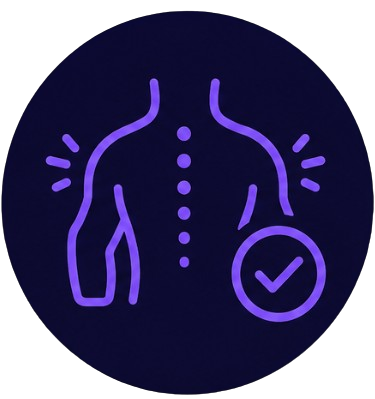

Guía: Descansos programados
Tomar descansos regulares durante largas sesiones de pantalla es esencial para mantener la salud física y mental. La fatiga visual, el cansancio muscular y la pérdida de concentración son consecuencias directas de no hacer pausas. Esta guía te enseña cómo incorporar descansos efectivos en tu rutina diaria.
Beneficios de los descansos programados
Reduce la fatiga visual
Descansar la vista cada 20 minutos previene el síndrome de visión por computadora.

Previene molestias musculares
Levantarse y estirarse reduce la tensión en cuello, hombros y espalda.

Mejora la concentración
Los descansos cortos refrescan la mente y restauran la capacidad de enfoque.
Aumenta la productividad
Trabajar con pausas regulares es más eficiente que largas sesiones sin descanso.
Actividades recomendadas para tus descansos
20-20-20
Cada 20 minutos, mira a 20 pies (6 metros) de distancia durante 20 segundos. Esto relaja los músculos oculares.
Estiramientos
Estira el cuello, hombros, brazos y espalda. Inclina la cabeza, encoge los hombros y estira los brazos hacia arriba.
Camina un poco
Levántate y camina alrededor de la habitación o ve a la cocina a beber agua. Esto activa la circulación.
Respira profundo
Inhala profundamente por la nariz, sostén 3 segundos y exhala lentamente por la boca. Repite 5 veces.
Hidrátate
Aprovecha el descanso para beber un vaso de agua. Mantenerse hidratado mejora la concentración.
Lee algo físico
Cambia la pantalla por un libro o revista durante 5 minutos. Esto descansa la vista y la mente.
Cómo implementar descansos en tu rutina
Paso 1: Define tus intervalos
Establece un ritmo que se adapte a tu flujo de trabajo. La regla 20-20-20 es ideal para pantallas, pero también puedes usar la técnica Pomodoro (25/5) o intervalos de 45/10. Elige el que mejor se ajuste a tus necesidades.
Paso 2: Usa recordatorios
Configura alarmas en tu teléfono, reloj inteligente o usa apps como "Stretch Reminder" o "Break Timer" (extensiones de navegador) que te avisan cuándo es momento de descansar.
Paso 3: Planifica tus descansos
No dejes los descansos al azar. Programa cada hora un descanso de 5-10 minutos. Usa ese tiempo para hacer una de las actividades recomendadas arriba.
Paso 4: Haz de los descansos un hábito
La constancia es clave. Al principio puede ser difícil recordarlo, pero con el tiempo se convierte en un hábito automático. Celebrar tus pequeños logros te ayudará a mantener la motivación.
Recuerda: Los descansos no son pérdida de tiempo, son inversión en tu salud y productividad. Unos minutos de pausa cada hora pueden marcar la diferencia en cómo te sientes al final del día. Sé constante y escucha a tu cuerpo.